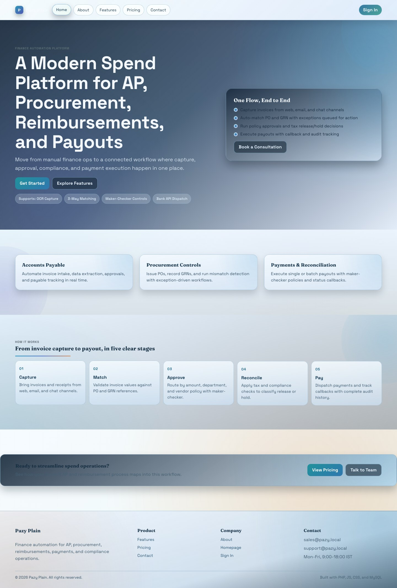
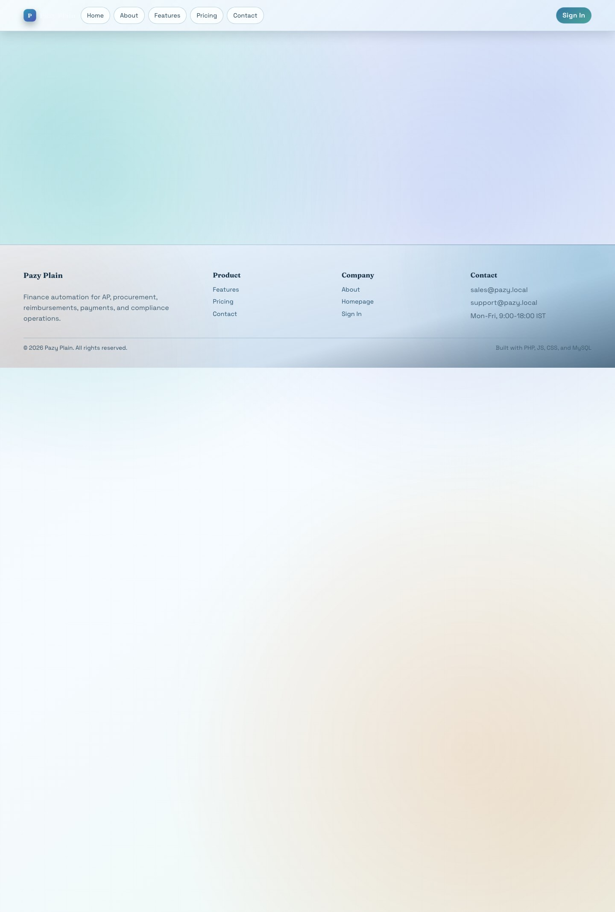
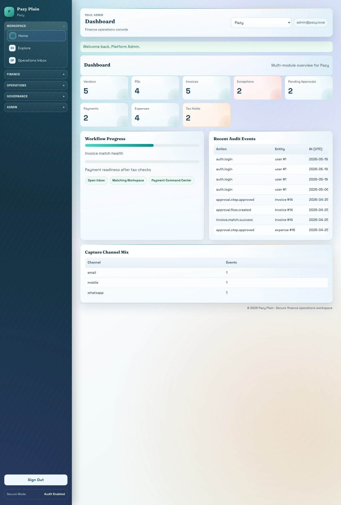
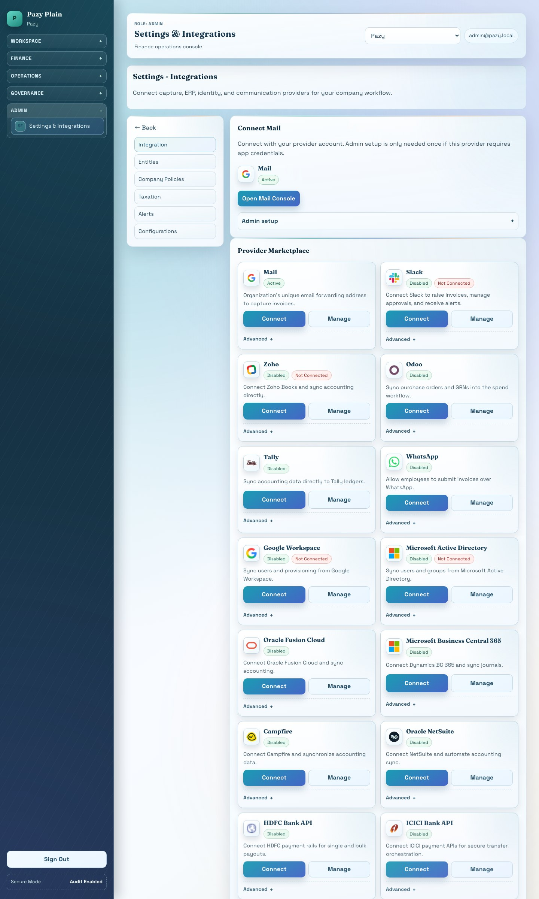
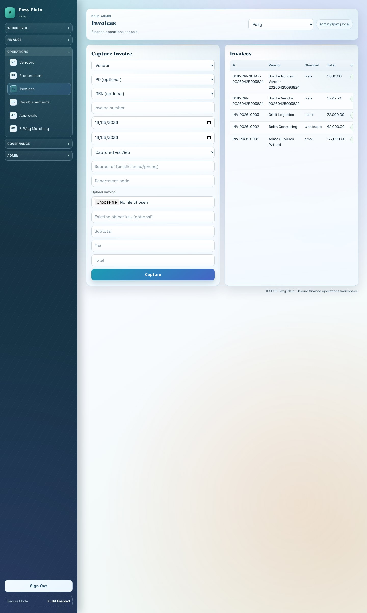
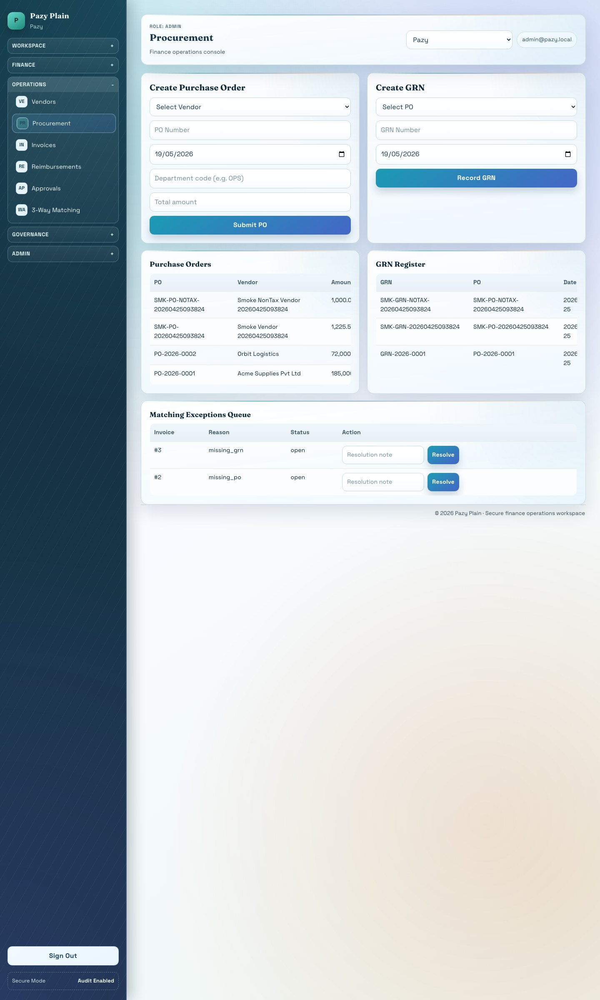
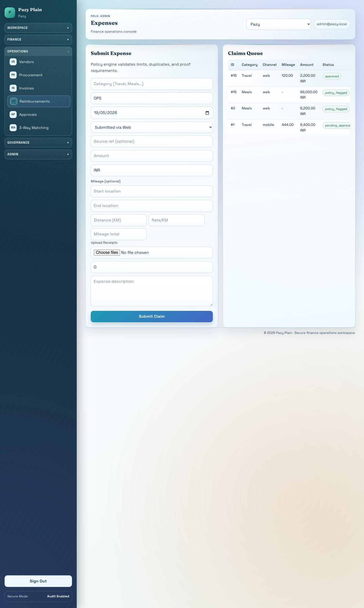
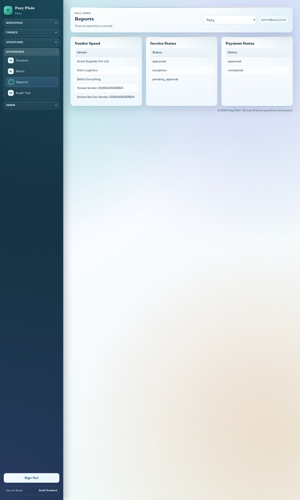

End-to-end mapping of the pure PHP, CSS, JavaScript, and MySQL finance automation tool, including live screenshots, module splits, folder tree, database tree, request routing, workflows, integrations, and verification commands.
This guide explains the complete tool from public website to logged-in finance operations. It includes live screenshots, module splits, file tree, database tree, route map, workflow map, and the remaining setup needed for real external integrations.
Pazy Plain is a finance automation web app built for company spend operations. It manages vendors, procurement, invoices, reimbursements, approvals, payments, tax reconciliation, notifications, integrations, reporting, and audit trails.
| Layer | Implementation |
|---|---|
| Frontend | PHP-rendered HTML, CSS, vanilla JavaScript |
| Backend | Core PHP, no Laravel/framework runtime |
| Database | MySQL on XAMPP |
| Server | XAMPP Apache |
| Entry point | purephp/public/index.php |
| Web pages | purephp/src/web.php |
| API routes | purephp/src/api.php under /api/v1 |
| Layout | purephp/templates/layout.php |
| Styling | purephp/public/assets/css/app.css |
| Browser JS | purephp/public/assets/js/app.js |
| Queue/worker | purephp/bin/console.php worker:run and purephp/scripts/worker_loop.sh |
| Storage | Local object-style storage in purephp/storage/object with SQL metadata |
| Area | URL |
|---|---|
| Public homepage | http://localhost/pazy/purephp/public/ |
| Login | http://localhost/pazy/purephp/public/index.php?page=login |
| Dashboard | http://localhost/pazy/purephp/public/index.php?page=dashboard |
| Integrations | http://localhost/pazy/purephp/public/index.php?page=integrations |
| API health | http://localhost/pazy/purephp/public/api/v1/health |
Default login:
Email: admin@pazy.local
Password: password1234







Pazy Plain
|-- Public Website
| |-- Home
| |-- About
| |-- Features
| |-- Pricing
| |-- Contact
| `-- Login
|-- Authentication
| |-- User enters email/password
| |-- Session is created
| |-- Role and permissions are loaded
| `-- Current company scope is selected
|-- Finance Workspace
| |-- Dashboard
| |-- Explore More / product hub
| |-- Operations inbox
| |-- Work queues
| `-- Audit status
|-- Master Data
| |-- Organizations
| |-- Companies
| |-- Users
| |-- Roles
| |-- Company memberships
| `-- Vendors
|-- Spend Workflows
| |-- Procurement
| | |-- Purchase order
| | |-- PO items
| | |-- Goods receipt note
| | `-- GRN items
| |-- Accounts payable
| | |-- Invoice capture
| | |-- Document upload
| | |-- OCR extraction job
| | |-- PO-GRN-invoice match
| | `-- Exception queue
| |-- Reimbursements
| | |-- Expense claim
| | |-- Attachments
| | |-- Policy validation
| | `-- Approval route
| |-- Payments
| | |-- Single payment
| | |-- Bulk payout
| | |-- Maker-checker
| | |-- Bank dispatch job
| | `-- UTR/reference update
| `-- Tax reconciliation
| |-- Match invoice with tax provider response
| |-- Release decision
| `-- Hold decision
|-- Integrations
| |-- OAuth connect providers
| |-- API key providers
| |-- Webhooks
| |-- IMAP/email capture
| |-- Messaging capture
| `-- Worker retry/dead-letter handling
`-- Final Outputs
|-- Approved invoices
|-- Completed payments
|-- Reimbursed employees
|-- Tax release/hold report
|-- Vendor spend report
|-- Audit timeline
`-- Integration job historyModules
|-- IAM and RBAC
| |-- Login/session
| |-- API bearer tokens
| |-- Role permissions
| |-- Company switch
| `-- Tenant isolation by company_id
|-- Vendors
| |-- Vendor master
| |-- Compliance score
| |-- Contact and bank metadata
| `-- Identity/MCA validation hook
|-- Procurement
| |-- Purchase orders
| |-- PO line items
| |-- Goods receipts
| |-- GRN line items
| `-- ERP sync hook
|-- Accounts Payable
| |-- Invoice capture
| |-- Invoice items
| |-- OCR extraction
| |-- Three-way matching
| `-- Matching exception queue
|-- Reimbursements
| |-- Expense claims
| |-- Receipt attachments
| |-- Mileage data
| |-- Policy violations
| `-- Payout conversion
|-- Approvals
| |-- Approval policies
| |-- Amount thresholds
| |-- Department/vendor routing
| |-- Maker-checker guard
| `-- Approve/reject actions
|-- Payments
| |-- Payment instructions
| |-- Connected banking
| |-- Bulk batches
| |-- UPI wallet records
| |-- Corporate cards
| `-- Credit line records
|-- Tax
| |-- Reconciliation run
| |-- Release/hold decision
| |-- Vendor compliance trend
| `-- Payment blocking signal
|-- Notifications
| |-- Email
| |-- Slack
| |-- WhatsApp
| |-- Reminders
| `-- Notification history
|-- Integrations
| |-- Provider marketplace
| |-- OAuth redirect/callback
| |-- In-app credential vault
| |-- Webhook ingestion
| |-- Integration jobs
| |-- Retry/dead-letter
| `-- Stub/live provider swap
`-- Reporting and Audit
|-- Summary reports
|-- Spend analytics
|-- Payment status
|-- Tax status
|-- Audit events
`-- Export-ready timelinespurephp/
|-- public/
| |-- index.php # Front controller for website, app, and API
| |-- .htaccess # Apache routing
| `-- assets/
| |-- css/app.css # Full UI styling and responsive layout
| `-- js/app.js # Frontend interactions
|-- src/
| |-- bootstrap.php # App bootstrap
| |-- config.php # Runtime config and env loading
| |-- Database.php # PDO MySQL connection
| |-- Auth.php # Login, roles, company scope, API auth
| |-- Csrf.php # CSRF tokens
| |-- helpers.php # Shared helpers, URLs, uploads, webhook utilities
| |-- web.php # Server-rendered public and authenticated pages
| |-- api.php # REST API and webhooks
| `-- App/
| |-- Enums/StateMachine.php
| |-- Modules/
| | |-- Approvals/ApprovalEngine.php
| | |-- Procurement/MatchingEngine.php
| | |-- Expenses/ExpensePolicyEngine.php
| | |-- Payments/PaymentEngine.php
| | |-- Payments/PaymentBatchEngine.php
| | |-- Tax/TaxReconciliationEngine.php
| | `-- Integrations/
| | |-- IntegrationJobWorker.php
| | |-- IntegrationOAuth.php
| | |-- IntegrationRuntimeConfig.php
| | `-- MailInboxPuller.php
| `-- Integrations/
| |-- ProviderRegistry.php
| |-- Contracts/
| |-- Stub/
| `-- Live/
|-- templates/
| `-- layout.php # Public header/footer and app shell
|-- database/
| |-- schema.sql # MySQL table structure
| `-- seed.sql # Demo/local seed data
|-- bin/
| `-- console.php # CLI doctor, setup, worker, smoke tests
|-- scripts/
| |-- setup_local.sh
| |-- worker_loop.sh
| |-- run_smoke.sh
| `-- cron.example
|-- docs/
| |-- screenshots/ # Live screenshots captured from localhost
| |-- Pazy_Architecture_Working_Guide.md
| |-- Pazy_Architecture_Working_Guide.html
| `-- Pazy_Architecture_Working_Guide.pdf
|-- logs/
| `-- app-error.log
`-- README.mdpazy_plain MySQL Database
|-- Tenant and identity
| |-- organizations
| |-- companies
| |-- users
| |-- roles
| |-- company_user
| `-- api_tokens
|-- Vendor master
| `-- vendors
|-- Procurement
| |-- purchase_orders
| |-- po_items
| |-- goods_receipts
| |-- grn_items
| `-- matching_exceptions
|-- Invoice capture and AP
| |-- invoices
| |-- invoice_items
| |-- documents
| `-- capture_events
|-- Reimbursements
| |-- expense_claims
| |-- expense_attachments
| |-- expense_policies
| `-- expense_policy_violations
|-- Approvals
| |-- approval_policy_rules
| `-- approvals
|-- Payments
| |-- company_accounts
| |-- payments
| |-- payment_batches
| `-- payment_batch_items
|-- Spend products
| |-- corporate_cards
| |-- credit_lines
| `-- upi_wallets
|-- Tax and compliance
| `-- tax_reconciliations
|-- Integrations
| |-- company_integrations
| |-- integration_jobs
| |-- webhook_events
| `-- idempotency_keys
|-- Notifications
| `-- notifications
`-- Security and governance
|-- audit_events
`-- request_rate_limits| Table | Rows |
|---|---|
| organizations | 1 |
| companies | 2 |
| users | 4 |
| vendors | 6 |
| purchase_orders | 4 |
| goods_receipts | 3 |
| invoices | 5 |
| expense_claims | 4 |
| approvals | 7 |
| payments | 2 |
| company_integrations | 19 |
| integration_jobs | 5 |
| audit_events | 15 |
HTTP Request
|-- /pazy/purephp/public/
| `-- public/index.php
| |-- Load bootstrap/config
| |-- Start secure session
| |-- Connect MySQL through Database.php
| |-- If path starts /api/v1
| | `-- route_api_request() in src/api.php
| |-- Else if POST form action
| | `-- handle_web_post() in src/web.php
| `-- Else render page
| `-- render_web_page() in src/web.php/api/v1
|-- GET /health
|-- POST /auth/login
|-- GET /organizations
|-- GET /companies
|-- GET /users
|-- GET /vendors
|-- POST /vendors
|-- GET /purchase-orders
|-- POST /purchase-orders
|-- GET /grns
|-- POST /grns
|-- GET /invoices
|-- POST /invoices
|-- POST /documents/upload
|-- GET /documents
|-- GET /expenses
|-- POST /expenses
|-- GET /approvals
|-- POST /approvals/{id}/approve
|-- POST /approvals/{id}/reject
|-- GET /payments
|-- POST /payments
|-- POST /payments/{id}/execute
|-- GET /payment-batches
|-- POST /payment-batches
|-- POST /payment-batches/{id}/dispatch
|-- GET /tax/reconciliations
|-- POST /tax/reconciliations/run
|-- GET /notifications
|-- GET /capture-events
|-- GET /inbox
|-- GET /reports
|-- POST /workers/integration-jobs/run
`-- POST /webhooks/{provider}/{event}Invoice arrives
|-- Web upload / email / WhatsApp / Slack / API webhook
|-- Store file in storage/object
|-- Create documents row
|-- Create invoices row with company_id
|-- Queue OCR/extraction integration job
|-- Worker processes OCR job
|-- Extracted data saved in invoice JSON
|-- MatchingEngine checks invoice against PO and GRN
| |-- If matched
| | |-- Status moves to matched
| | `-- ApprovalEngine creates approval route
| `-- If mismatch
| |-- Status moves to exception
| `-- matching_exceptions row is created
|-- Approver approves or rejects
|-- If approved, payment can be created
|-- Tax reconciliation can release or hold
|-- PaymentEngine creates payment instruction
|-- Worker dispatches bank provider job
|-- UTR/reference saved
`-- Reports and audit timeline updateEmployee expense claim
|-- User submits amount, category, date, mileage, description, proof
|-- Attachment metadata stored
|-- ExpensePolicyEngine runs checks
| |-- Category limit
| |-- Daily/monthly limit
| |-- Mileage rule
| |-- Duplicate check
| `-- Mandatory proof rule
|-- Clean claim moves to approval
|-- Out-of-policy claim is flagged
|-- Manager/finance approval route is created
|-- Approved claim can become payment instruction
|-- Bulk payout can include approved reimbursements
`-- Audit and reimbursement reports updateIntegration Marketplace
|-- User sees provider cards with logo/icon
|-- User clicks Connect
| |-- OAuth provider
| | |-- Redirect to provider authorization URL
| | |-- User approves on provider platform
| | |-- Provider redirects to Pazy callback
| | |-- Tokens/account metadata saved in in-app vault
| | `-- Status becomes active if callback succeeds
| `-- API-key/provider setup
| |-- User opens Manage
| |-- Admin setup is kept separate from normal user card
| |-- Required keys saved per company
| `-- Test connection confirms status
|-- Provider sends webhook
| |-- Signature is verified
| |-- Idempotency key prevents duplicate processing
| |-- Payload is stored as webhook event
| `-- Integration job is queued
`-- Worker processes job with retry/dead-letter behaviorEntity needs approval
|-- ApprovalEngine reads policy rules
|-- Rules inspect amount, vendor, department, entity type, and company scope
|-- Approval rows are created by level
|-- Maker-checker guard checks initiator != checker for restricted actions
|-- Approver approves or rejects
|-- Entity status updates only through allowed state transitions
`-- Audit event is written for every critical action| Domain | Main States |
|---|---|
| Invoice | captured, processed, matched, exception, approved, paid, rejected |
| PO | draft, approved, closed |
| Expense | submitted, flagged, approved, rejected, paid |
| Approval | pending, approved, rejected |
| Payment | pending_approval, approved, processing, completed, failed, blocked |
| Tax | release, hold, review |
| Integration job | pending, running, completed, retrying, dead_letter |
| Screen | Module | Main Tables | Main Code |
|---|---|---|---|
| Public website | Marketing/public pages | contact/audit if submitted | src/web.php, templates/layout.php |
| Login | IAM/RBAC | users, roles, company_user | Auth.php, src/web.php |
| Dashboard | Operations overview | invoices, payments, approvals, tax | src/web.php |
| Vendors | Vendor management | vendors | src/web.php, src/api.php |
| Procurement | PO/GRN | purchase_orders, goods_receipts | MatchingEngine.php |
| Invoices | AP automation | invoices, invoice_items, documents | src/web.php, MatchingEngine.php |
| Matching | Exception handling | matching_exceptions | MatchingEngine.php |
| Expenses | Reimbursements | expense_claims, expense_policy_violations | ExpensePolicyEngine.php |
| Approvals | Governance | approvals, approval_policy_rules | ApprovalEngine.php |
| Payments | Payouts | payments, payment_batches | PaymentEngine.php, PaymentBatchEngine.php |
| Tax | Reconciliation | tax_reconciliations | TaxReconciliationEngine.php |
| Integrations | Provider marketplace | company_integrations, integration_jobs, webhook_events | IntegrationOAuth.php, ProviderRegistry.php |
| Reports | Analytics/audit | all transactional tables, audit_events | src/web.php, src/api.php |
Already implemented in code:
|-- In-app provider marketplace
|-- Connect/Manage UI
|-- OAuth redirect/callback structure
|-- Per-company integration storage
|-- Stub providers for local workflows
|-- Live adapter placeholders for bank, ERP, tax, messaging, identity
|-- Webhook endpoint with signature/idempotency checks
|-- Worker queue with retry/dead-letter behaviorStill required from the real provider/account owner:
|-- Create developer apps in Slack, Zoho, Google, Microsoft, WhatsApp, bank, tax, ERP portals
|-- Add Pazy callback URL to each provider app
|-- Get client ID, client secret, webhook signing secret, API base URL, and account IDs
|-- Enter those values in the app Manage panel
|-- Approve OAuth on the provider platform
|-- Enable webhook delivery from the provider dashboard
|-- Run Test Connection and worker validationcd /Applications/XAMPP/xamppfiles/htdocs/pazy/purephp
./scripts/setup_local.sh
php bin/console.php infra:doctor
php bin/console.php integrations:preflight --probe=1
php bin/console.php qa:smoke --company=1
php bin/console.php worker:run --limit=50Expected smoke result:
Smoke QA passed
- Invoice flow creates invoice and payment
- Reimbursement flow flags and approves claims
- Tax flow creates release/hold decisionInput
|-- Invoice file
|-- PO/GRN data
|-- Expense receipt
|-- Vendor details
|-- Payment instruction
|-- Provider webhook
`-- Tax/integration response
Processing
|-- Validation
|-- Company isolation
|-- Policy rules
|-- Matching rules
|-- Approval routing
|-- Provider dispatch
|-- Retry/dead-letter
`-- Audit logging
Output
|-- Approved invoice
|-- Matching exception
|-- Approved reimbursement
|-- Completed payment with UTR/reference
|-- Tax release/hold decision
|-- Notification
|-- Report
`-- Audit timelinePazy Plain is a pure PHP and MySQL finance automation platform that centralizes vendor data, procurement, invoices, reimbursements, approvals, payments, integrations, tax decisions, reporting, and audit history in one company-scoped workspace.